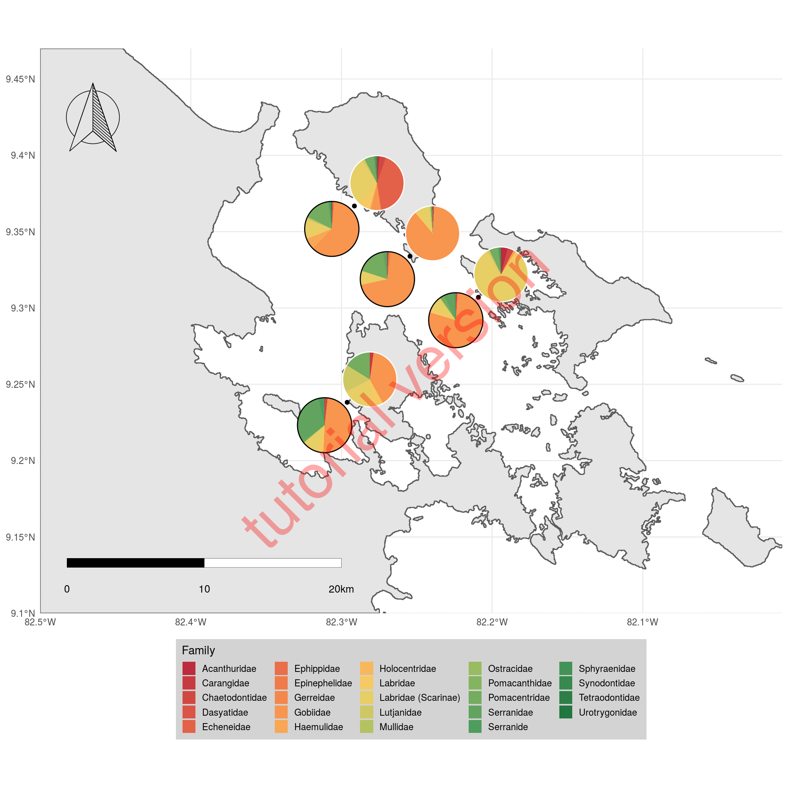
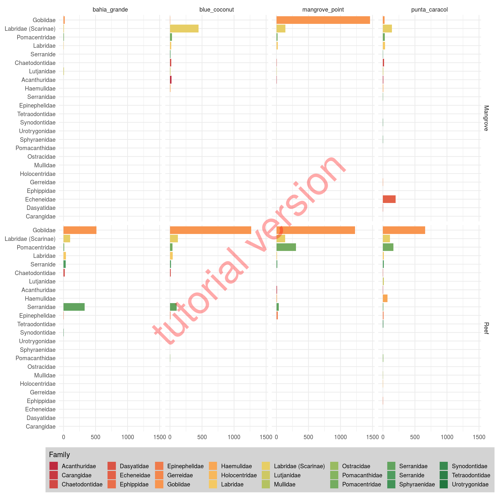

3 pie-charts on map
3.1 External pacakges
Note that we need to drop the following entries unless you know their family (this happens automatically within this script):
- little_grey_guys
- little_guys_green
Also, the following species need to be added to the fish list:
- flagfin_mojarra
- grey_snapper
- bearded_toadfish
- blue hamlet (unless changed to black hamlet)
The script starts by loading all needed libraries.
# loading all needed libraries
# -----------------------------------
library(tidyverse)
# for maps
library(sf)
# for pies on maps
library(scatterpie)
# for colors
library(paletteer)
# for scalebar
library(ggsn)
# for loading the compass image
library(hypoimg)## --- Welcome to hypoimg ---3.2 Custom functions
To make the code more easily understandable (hopefully), we define some helper functions upfront (as opposed to “in the middle of the process”):
The shapefile that we downloaded from gdam.org contains whole Panama, but we are only going to plot Bocas del Toro. Therefore we define a function to crop the shapefile to the extent of the map.
# setting up custom functions
# -----------------------------------
# function to crop shapefiles to plot extent
crp <- function (poly, xlim = xlim_boc, ylim = ylim_boc) {
st_intersection(poly,
st_set_crs(st_as_sf(as(raster::extent(xlim[1],
xlim[2],
ylim[1],
ylim[2]),
"SpatialPolygons")),
st_crs(poly)))
}To plot the sampling pointswe turn the data.frame into a spatial object (strictly this is not necessary since the projection of our map is WGS - the same as GPS uses, but it might be good to know how to do this propperly…).
# function to turn a data.frame (with the columns
# "Longitude" and "Latitude") into a spatial object
tibble_to_sf <- function(tib, crs = 4326){
tib %>%
st_as_sf(., coords = c("Longitude","Latitude")) %>%
st_set_crs(., crs)
}At some point we will need to fill the empty celly of our data sheet with zeros - by default R will fill empty cells with NA.
For this we create a function, that will replace NA in all columns of a data frame except for a specific subset of columns (the “non-fish” columns).
# funtion to fill empty cells (NA) with zeros
replace_all_na <- function(tib, replace = 0, exclude = c("Date", "location", "group",
"habitat_type", "depth")){
nm_replace <- names(tib)[!(names(tib) %in% exclude)]
replace_list <- rep(replace,length(nm_replace)) %>%
set_names(nm = nm_replace) %>%
as.list()
tib %>% replace_na(replace = replace_list)
}3.3 Loading data
Now, we are all set up and can start with the actual work.
First, we need to set the extent of the map and import all the data sheets into R.
# -----------------------------------
# the actual script
# -----------------------------------
# setting the extent of the map
xlim_boc <- c(-82.5, -82)
ylim_boc <- c(9.1, 9.47)Next, we import the Panama shapefile and crop it to the map extent.
# reading the panama shape files and
# cropping it to the plot extent
# (downloaded from https://www.gadm.org/download_country_v3.html)
bocas <- read_sf('data/PAN_adm0.shp') %>%
crp()Then we load all de diving sites and remove duplicated entries (we only need each position once).
# reading in the dive sites for the gps locations
sites <- read_tsv('data/dive_spots - Sheet1.tsv') %>%
filter(!duplicated(Site)) %>%
select(Site, Latitude, Longitude)Then, we import the survey data into R.
Directly while importing we deal with some issues:
- we extract the pure site name from the
locationcolumn (dropping the_mangrovesuffix) - we proppely format the date (actually transforming the column from
characterintodate-type) - since we have several transects per group, we number the transects within each group
- from the columns
Site,habitat_type,groupandtranset_nr_within_groupwe create a unique identifier for each transect - finally, we use the previously prepared function to replace all empty fish-cells with zeros
Beware of the col_types = str_c(c('ccdc',rep('d', 78)),collapse = '') part: here we define the column types (c = character, d = “double”/number). So I the original google sheet changes (eg. by a merge og “blue hamlet” and “black hamlet”) the 78 needs to be updated to the total number of columns - 4!
# reading in the transect data, replacing NAs with zeros
# and merge with gps positions
transects <- read_tsv('data/Fish_surveys - Sheet1.tsv',
col_types = str_c(c('ccdc',rep('d', 78)),collapse = '')) %>%
mutate(Site = location %>% str_to_lower() %>% str_remove('_mangrove'),
Date = Date %>%
str_replace(pattern = "([0-9]*)/([0-9]*)/([0-9]*)",
replacement = "\\3-\\1-\\2") %>%
as_date(Date)) %>%
replace_all_na() %>%
left_join(sites)We create a copy of the survey data, extract each sampling point once, and turn dete data set into spatial objects (the sampling spots of the transects).
# create a spatial object from the transects
transects_sf <- transects %>%
filter(!(duplicated(Site))) %>%
select(Site:Longitude) %>%
tibble_to_sf()Then we import the fish list to be able to add familiy names to the transect data.
# reading in the fish list for the fish families and create an ID column
# for merging with the transect data
fish_list <- read_tsv('data/Fish_list_2020 - Sheet1.tsv') %>%
select(Common_name:`Family (latin name)`) %>%
# format the fish id column which is going to be
# used for the merging with the transect data
mutate(fish_id = Common_name )## Parsed with column specification:
## cols(
## Common_name = col_character(),
## `Latin name` = col_character(),
## `Family (common name)` = col_character(),
## `Family (latin name)` = col_character(),
## Phase = col_character(),
## Abundance = col_character(),
## `Date (YYYY-MM-DD)` = col_character(),
## Comments = col_character(),
## Observer = col_character(),
## Checked = col_character()
## )We are going to plot two pies per sampling spot (one per habitat type), so here we define the offset width between them (which will also determine the pie size).
3.4 Merge and summarize data
Now is the time to merge the trasect data and the fish list.
To do this merging (again) we are going to apply some tidyverse-magic (using functions from the packages tidyr and dplyr).
If you have difficulties following these rather complex steps, it might be helpful to highlight and execute just parts of the code (to see what is going on you will allways need to start with transects %>% (s. explanation of nmds).
# merge transect data and fish list
summary_by_family <- transects %>%
# we need unique identifiers for each transect,
# so we are going to assign a transet_nr_within_group
group_by(location, group) %>%
mutate(transet_nr_within_group = row_number(),
transect_id = str_c(location, group,
transet_nr_within_group,
sep = '_')) %>%
ungroup() %>%
# then we transform the data into "long format" to be able
# to merge the family names based on the common name
pivot_longer(cols = bridled_goby:porkfish,
names_to = 'common_name') %>%
# from the common name we create a fish id that is in the EXACT same
# format as the fish id column of the fish list data frame
# (this requires some reformating, eg. dropping '_juvenile')
mutate(fish_id = common_name %>%
str_remove("_juvenile|juvenile_|initial_|intermediate_|juv_")) %>%
# merge with the fish list
left_join(fish_list) %>%
# filter(!duplicated(fish_id)) %>%
# View()
# drop all row that do not have an entry in the
# fish list (typos & missing)
filter(!is.na(`Latin name`)) %>%
# sum the count for each family at each habitat type of each location
group_by(`Family (latin name)`, Site, habitat_type) %>%
summarise(n = sum(value), Latitude = Latitude[[1]], Longitude = Longitude[[1]]) %>%
# transform back into "wide format"
pivot_wider(names_from = `Family (latin name)`, values_from = n) %>%
# adjust positions of pies
mutate(grp = str_c(Site, habitat_type, sep = '_'),
Longitude = ifelse(habitat_type == 'Reef', Longitude - .5 * pie_shift, Longitude + .5 * pie_shift),
Latitude = ifelse(habitat_type == 'Reef', Latitude - .5 * pie_shift, Latitude + .5 *pie_shift))## Joining, by = "fish_id"Since we are going to need this inforamtion several times downstream, we are extracting the names of all families within the transects.
# select the names of all present fish families
fish_columns <- names(summary_by_family)[!(names(summary_by_family) %in%
c("Date", "Site", "habitat_type", "Latitude",
"Longitude", "grp"))]Now, we set te color scheme for the habitat type (for the circles around the pies).
# set color coding for habitat type
clr_habitat <- c(rgb(0,0,0), rgb(1,1,1)) %>%
set_names(nm = c('Reef', 'Mangrove'))To put the compass on the map, we read the svg file into R.
3.5 Plotting
Now we have all the pieces needed to plot the pies on the bocas map.
# -----------------------------------
# plotting the map
# -----------------------------------
# initalize the plot
ggplot()+
# add the panama coastline
geom_sf(data = bocas)+
# add the sampling sites (as dots)
geom_sf(data = transects_sf)+
# add the pies
geom_scatterpie(aes(x = Longitude, y = Latitude ,
r = .6 * pie_shift , group = grp),
data = summary_by_family, color = rgb(1,1,1,0),
cols = fish_columns) +
# add a color coded ring around the pie to indicate habitat type
geom_circle(data = summary_by_family,
aes(x0 = Longitude, y0 = Latitude ,
r = .6 * pie_shift, color = habitat_type )) +
# add the scalebar
scalebar(x.min = -82.5, x.max = -82.3,
y.min = 9.13, y.max = 9.17,transform = TRUE,
dist = 10, dist_unit = "km",
st.dist = .35, st.size = 3.5,
border.size = .1, height = .15)+
# add the compass
annotation_custom(grob = compass,
xmin = -82.49, xmax = -82.44,
ymin = 9.4, ymax = 9.45)+
# set the color palette for the pies
scale_fill_manual(values = paletteer_c(n = length(fish_columns),
palette = "ggthemes::Red-Green-Gold Diverging"))+
# set the color palette for the habitat types
scale_color_manual(values = clr_habitat, guide = FALSE
)+
# remove any "extra space" on the x and y axis
scale_x_continuous(expand = c(0,0))+
scale_y_continuous(expand = c(0,0))+
# foramt the legend
guides(fill = guide_legend(title = 'Family',
title.position = 'top'))+
# twaek the plot appearance
theme_minimal() +
theme(axis.title = element_blank(),
legend.key.size = unit(14,'pt'),
legend.key.height = unit(14,'pt'),
legend.background = element_rect(fill = 'lightgray',
color = rgb(1,1,1,0)),
legend.position = 'bottom')
3.6 Horizontal bar plots
One downside of the pie map is that we have so many different families that it is kind of hard to tell which color represents each species exactly.
Another issue is the fact that here we standardized pie sizes, so we cant tell differences in overall abundances - just in composition.
So a nice complementary plot might be to summariye the family data in a bar plot.
summary_by_family %>%
# transform the family data into "long format"
pivot_longer(cols = Acanthuridae:Urotrygonidae,
names_to = 'Family', values_to = 'n') %>%
# initialize ggplot
ggplot(aes(y = fct_reorder(Family, n), x = n, fill = Family))+
# add horizontal bars
geom_barh(stat = 'identity')+
# facet over haitat type and site (create subplots)
facet_grid(habitat_type ~ Site)+
# use same color coding as in the pie map
scale_fill_manual(values = paletteer_c(n = length(fish_columns),
palette = "ggthemes::Red-Green-Gold Diverging"))+
# format the legend
guides(fill = guide_legend(title = 'Family',
title.position = 'top',
nrow = 3))+
# twaek the plot appearance
theme_minimal() +
theme(axis.title = element_blank(),
legend.key.size = unit(14,'pt'),
legend.key.height = unit(14,'pt'),
legend.background = element_rect(fill = 'lightgray',
color = rgb(1,1,1,0)),
legend.position = 'bottom')
Anderson, Marti J. 2001. “A New Method for Non-Parametric Multivariate Analysis of Variance.” Austral Ecology 26 (1). Blackwell Science Pty: 32–46. https://doi.org/10.1111/j.1442-9993.2001.01070.pp.x.
Anderson, Marti J, and Daniel C I Walsh. 2013. “PERMANOVA, ANOSIM, and the Mantel test in the face of heterogeneous dispersions: What null hypothesis are you testing?” Ecological Monographs 83 (4): 557–74. https://doi.org/10.1890/12-2010.1.